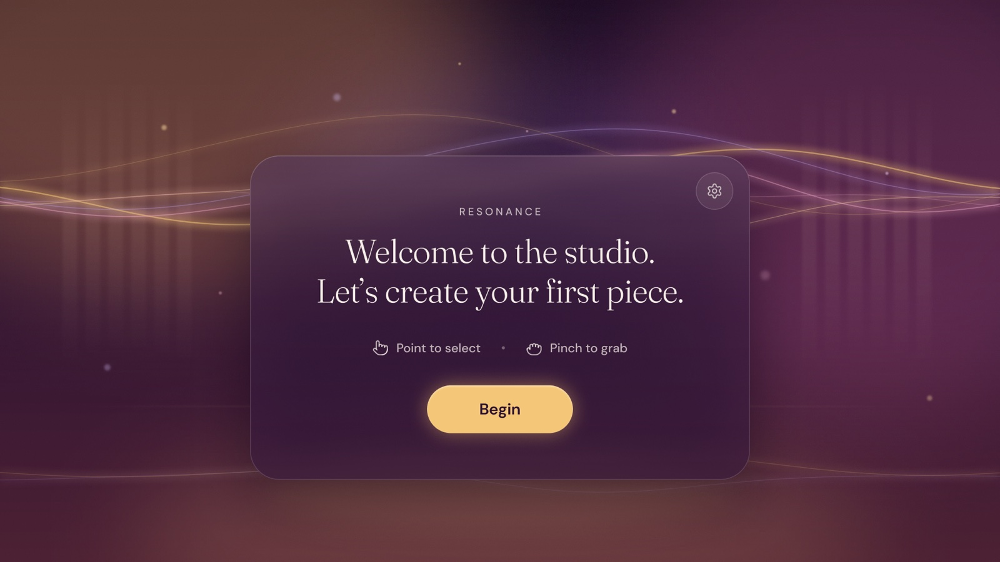
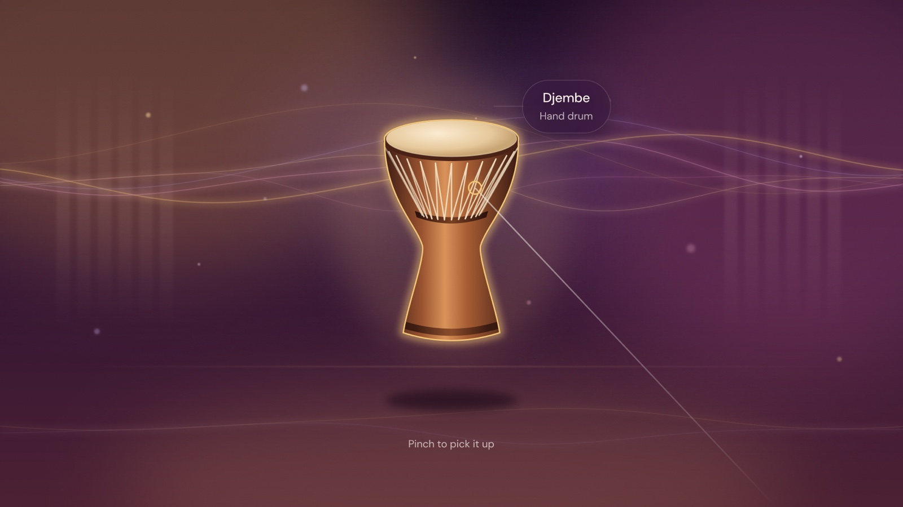
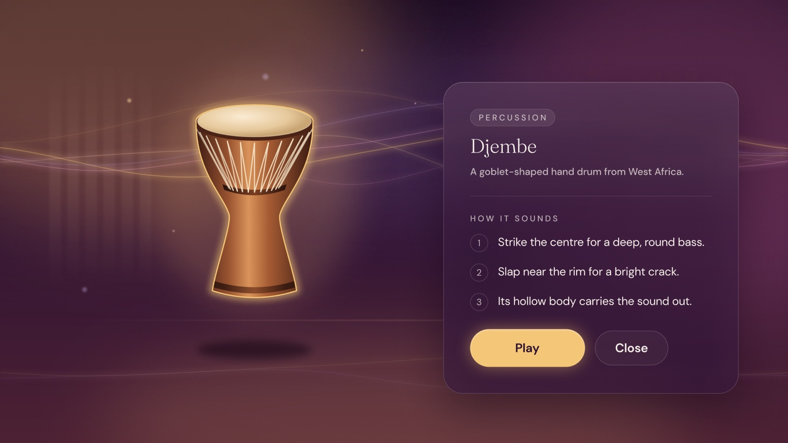
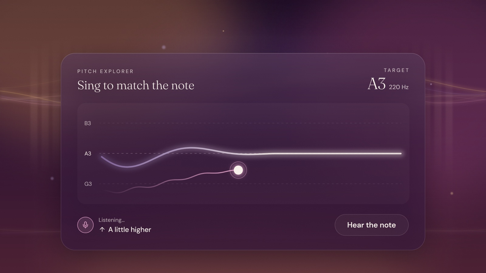
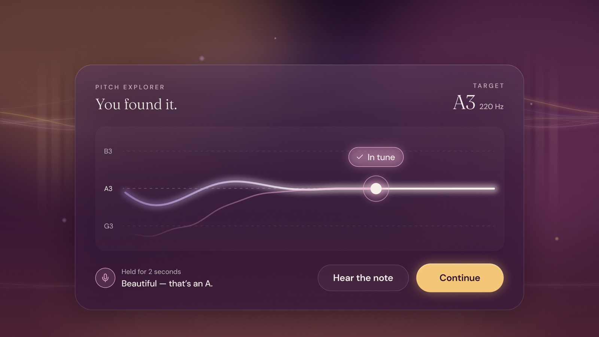
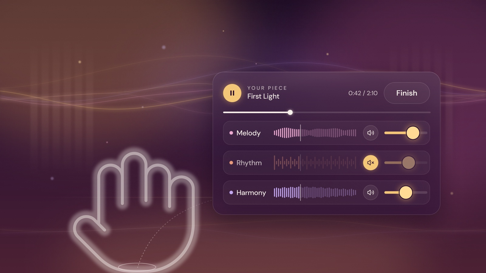
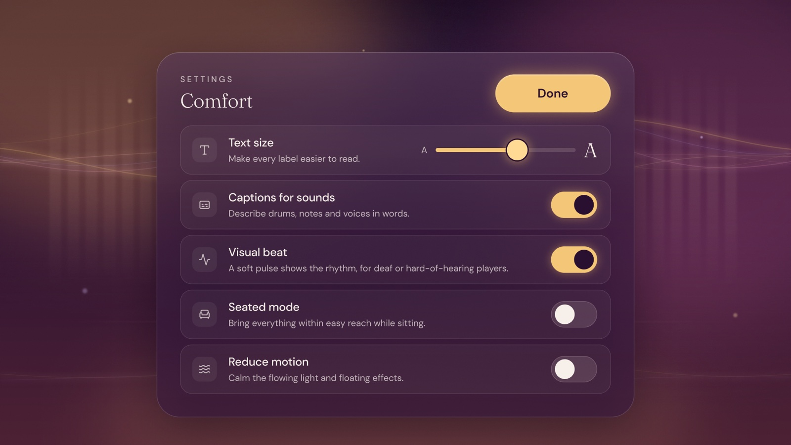

Resonance is a concept for an immersive music studio where beginners learn how music works by making it: exploring instruments, matching pitch, and layering a short piece. I designed the interface and user journey for a VR headset.
I've trained in Carnatic classical music for 15 years, and I wanted to explore how VR could make music feel less intimidating to learn. Music is something you understand by doing, which makes it a natural fit for immersive learning.
Interfaces in VR follow different rules than screens. Text is harder to read, hand tracking is less precise than a mouse, and badly placed panels can block the experience or cause discomfort. The interface needed to guide and teach without getting in the way.
Comfort Settings are reachable from the start.
Large type, short text, and high contrast on every panel.
Buttons sized for imprecise hand tracking.
The instrument card appears beside the drum, not over it.
Gold is used only for things you can touch, while feedback (your pitch, "In tune") uses a soft rose, so controls and signals never get confused.
In Carnatic music, notes glide and bend, so I showed pitch as a curve instead of fixed piano keys.
Track layers live in a wrist menu, always reachable but out of view until needed.






I built shared colors, text styles, and reusable components (buttons, toggles, sliders, mute controls with interactive states), so every screen stays consistent and new screens are fast to make.
I defined the concept, journey, and visual direction, and used AI-assisted tools in Figma to speed up layout and component building. I then reviewed and refined the results against VR readability and accessibility principles.
Test it with users in a headset, tune panel distance and sizing in a real 3D scene, and build a working version in Unity.
Click through the full journey, from Arrival to Track Layers, in the Figma prototype.
View clickable prototype